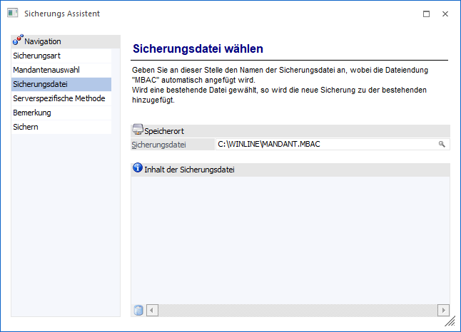
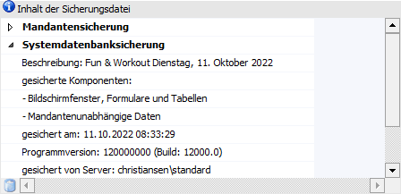
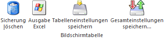

In diesem Schritt muss die Datei angegeben werden, in welche gesichert werden soll.

Ø Sicherungsdatei
Hier wird die Datei angegeben, in welche gesichert werden soll. Zusätzlich kann auch noch ein alternatives Laufwerk bzw. Verzeichnis angegeben werden.
Soll eine bestehende Datei verwendet werden, so kann nach dieser durch Drücken der Taste F9 gesucht werden. Ebenso kann eine Sicherungsdatei mittels Drag & Drop eingefügt werden.
Nachdem die Sicherungsdatei bestätigt wird, bekommt dieser Eintrag automatisch die Erweiterung MBAC.
Hinweis
In eine Sicherungsdatei (MBAC-Datei) können auch mehrere Sicherungen durchgeführt werden, wobei es egal ist, ob es sich dabei um mehrere Mandanten handelt oder ob ein und derselbe Mandant öfters in die gleiche Sicherungsdatei gesichert wird. Im Falle einer Rücksicherung werden alle vorhandenen Sicherungseinträge vorgeschlagen, wobei dann der gewünschte Eintrag ausgewählt werden kann.
Tabelle "Inhalt der Sicherungsdatei"

In der Tabelle "Inhalt der Sicherungsdatei" wird - sofern vorhanden - angezeigt, welche Elemente in der Sicherungsdatei bereits enthalten sind. Dies können u.a. folgende Objekte sein:
ü Mandantensicherung
ü Systemdatenbanksicherung
ü Systemtabellensicherung
Durch Anklicken des Icons vor dem jeweiligen Eintrag werden die Detailinfos angezeigt (was wurde wann mit welchen Einstellungen gesichert).
Achtung
In einer Sicherungsdatei können zwar mehrere Einträge (unterschiedliche Mandanten bzw. unterschiedliche Sicherungsstände) vorhanden sein, diese müssen aber alle in der gleichen Datenstandsversion gesichert werden.
Tabellenbuttons

Ø Sicherung löschen
Wenn eine Sicherungsdatei ausgewählt wird, welche bereits eine Sicherung enthält, kann durch Anklicken dieses Buttons die aktuell ausgewählte (Teil)-Sicherung gelöscht werden.
Ø Ausgabe Excel
Durch Anwahl des Buttons "Ausgabe Excel" wird der Inhalt der Tabelle an Microsoft Excel übergeben.
Ø Tabelleneinstellungen speichern
Die Spalten einer Tabelle können grundsätzlich an beliebige Positionen verschoben, bzw. in der Breite entsprechend angepasst werden. Durch Anwahl des Buttons "Tabelleneinstellungen speichern" werden die Einstellungen benutzerspezifisch gespeichert und bei dem nächsten Aufruf des Programmpunktes wieder vorgeschlagen.
Ø Gesamteinstellungen speichern
Im Gegensatz zu "Tabelleneinstellungen speichern" können mit "Gesamteinstellungen speichern" mehrere Tabellenaufbauten gespeichert und nach Wunsch geladen werden.
Durch Anklicken des Buttons "Vor" gelangt man in den nächsten Schritt. Durch Anklicken des Buttons "Zurück" kann nochmals der zu sichernde Mandant geändert bzw. die Art der Sicherung verändert werden. Alternativ hierzu können die Schritte über die Navigation gewählt werden.